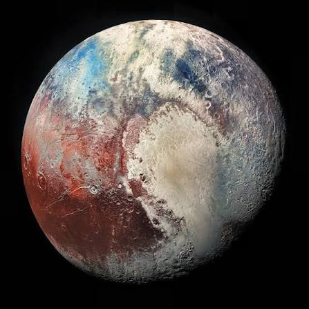

Plutón está catalogado como un planeta enano. En 2006, Plutón fue categorizado con otros tres objetos en el sistema solar que son aproximadamente del mismo tamaño que Plutón: Ceres, Makemake y Eris. Estos objetos, junto con Plutón, son mucho más pequeños que los "otros" planetas.